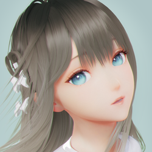
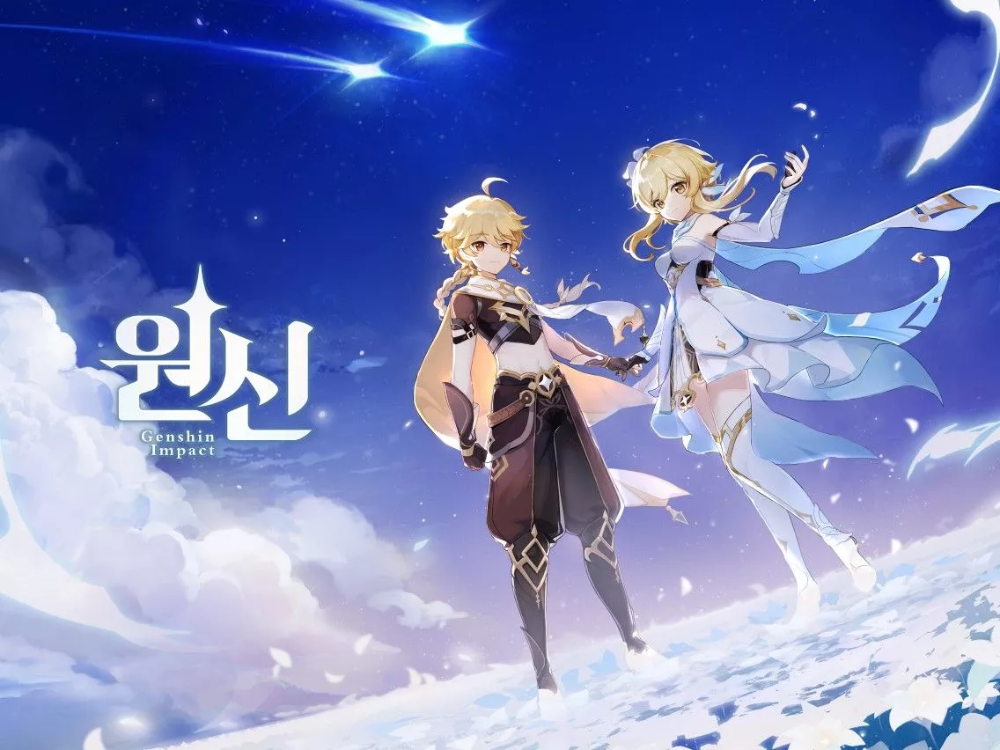
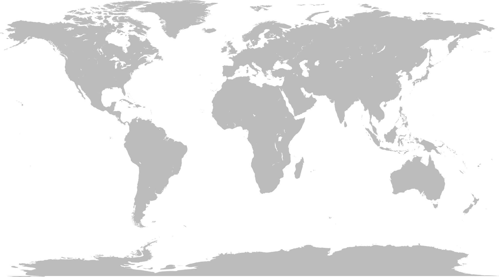
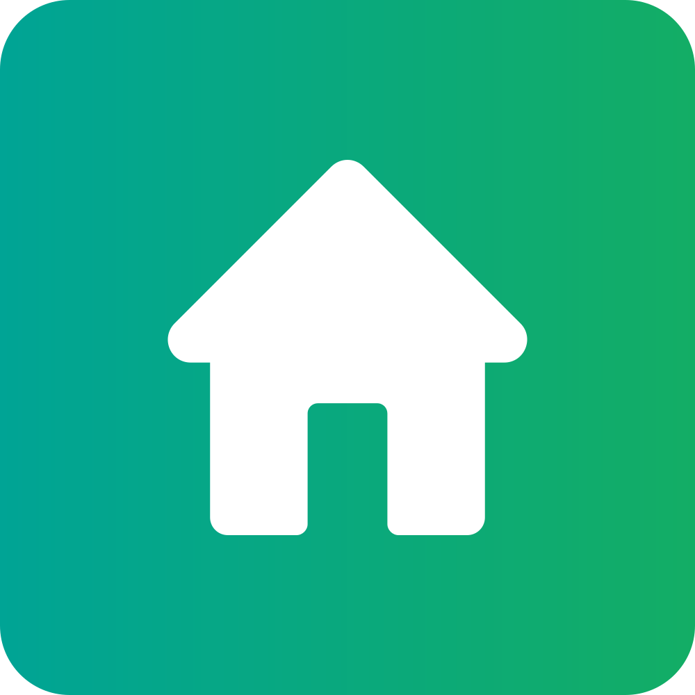

| [주요 작품] | ||||
| 붕괴 시리즈 | ||||
| FlyMe2theMoon | 붕괴학원 | 분괴학원 2 | 붕괴 3rd | 붕괴: 스타레일 |
| 기타 | ||||
|  | | |||
| Lumi_N0va | 원신 | 미해셜사건부 | ||
|  | |
| [펼치기/접기] | |
| 스토리 | 스토리 · 등장인물 (몬드 · 리월 · 이나즈마 ) · 설정 (신 · 일곱 신 · 신의 눈 ) |
| 콘텐츠 | 콘텐츠 · 캐릭터 · 적 · 생물 · 지역 ((몬드 · 리월 · 이나즈마) · 비경 (나선 비경 ) · 임무 (마신 · 전설 · 의뢰 ) · 이벤트 |
| 시스템 | 시스템 (원소 반응 ) · 전투 · 탐사 · 기원 (캐릭터 · 무기 ) · 기행 · 업적 · 속세의 주전자 · 낚시 |
| 아이템 | 무기 (한손검 · 양손검 · 장병기 · 법구 · 활 ) · 성유물 · 육성 · 음식 · 재료 · 간편 · 임무 · 귀중한 물품 · 장식 · 기타 |
| 기타 | 업데이트 · 인게임 요소 · OST · 평가 · 논란 및 사건 사고 · 출시 전 정보 · 갤러리 (대피소 ) · 채널 |
| 목차 1.개요 2.출시 전 정보 3.서버 3.1. 중국 서버 4.요구 사양 4.1. PS4 / PS5 5. 스토리 6. 등장인물 7. 설정 8. 콘텐츠 9. 시스템 9.1. 기원 10. OST 11. 업데이트 12. 평가 13. 흥행 14. 논란 및 사건 사고 15. 미디어 믹스 16. 기타 16.1. 인게임 팁 17. 외부 링크 |
원신 原神Project Genshin Impact |
|
|  | |
| 개발 | |
| 유통 | |
| 플랫폼 |  [1]ㅣ [1]ㅣ |
| ESD | |
| 장르 | 3인칭 오픈 월드 액션 어드벤처 |
| 출시 |  2020년 9월 28일 2021년 4월 28일 2021년 6월 9일 |
| 엔진 | ㅣ |
| 지원 언어 | 자막[8] | 음성[9] |
| 심의 등급 | 15세 이용가[결정서][11] |
| 해외 등급 | ESRB T PEGI 12 |
| 관련 사이트 |  |
| [1.1 PV] |
| [1.2 PV] |
| [1.3 PV] |
| [1.4 PV] |
| [1.5 PV] |
| [1.6 PV] |
| [2.0 PV] |
| [2.1 PV] |
| [2.2 PV] |
| [2.3 PV] |
| [2.4 PV] |
miHoYo 에서 제작한 3D 오픈 월드 액션 어드벤처 게임 . 불, 물, 얼음, 바람, 번개, 바위, 풀 등 7가지의 원소 시스템을 기반으로 티바트 대륙을 포함한 원신 세계의 다양한 국가 및 지역를 여행하는 게임이다.
| 언어별 로고 | |
| 한국어 | 일본어 |
| 중국어 | 글로벌[12] |
자세한 내용은 원신/출시 전 정보 문서를 참고하십시오.
중국의 플랫폼인 탭탭을 통해 서비스되는 중국 서버. 여기도 더빙을 포함한 한국어를 지원한다.
탭탭과 별도로 운영되는 글로벌 서버. 북미, 유럽, 아시아, 대만·홍콩·마카오 서버로 나뉜다.
일일 시작 시간은 각 서버시간으로 새벽 04시다. 글로벌 서버의 각 서버는 아래와 같은 시간대[13]를 사용한다.
| 서버 | 시간대 |
| America | UTC-5 |
| Asia | UTC+8 |
| Europe | UTC+1/td> |
| TW, HK, MO | UTC+8 |
한국(UTC+9)에서 아시아 서버 및 대만, 홍콩, 마카오 서버(UTC+8)로 플레이하는 경우 매일 05시에 익일로 넘어간다.[A]
한국(UTC+9)에서 아메리카 서버(UTC-5)로 플레이하는 경우 매일 18시에 익일로 넘어간다.[A]
한국(UTC+9)에서 유럽 서버(UTC-1)로 플레이하는 경우 매일 14시에 익일로 넘어간다.[A]
모바일을 고려해 개발되어서 최적화가 잘 되어있는데다 PS4 Pro 이상부터는 4K까지 지원하기 때문에 옵션 타협 없이 게임을 돌리는데 거의 지장이 없다. 있다고 해도 종종 일어나는 버그 정도. 또한 PS5 에도 출시를 했기 때문에 무료 업그레이드를 통한 플레이도 가능하다. 다만 PS4 구형/Slim의 경우에는 적들이 많아질 시엔 프레임 드롭과 렉이 꽤나 체감되는 편이다. 평소에 플레이스테이션 유저였거나 컨트롤러 조작이 편한 사람들에게 추천한다.
2021년 7월 21일에 진행된 2.0 업데이트를 통해 PS4/PS5에서도 미호요 계정 연동이 가능해졌다. 플레이스테이션의 PSN계정과 미호요 계정을 연동해 모바일과 컴퓨터로 크로스 세이브를 통해 똑같은 계정으로 플레이 할 수 있다고 한다. 하지만 이미 원신에 로그인된 PSN 계정은 연동을 할 수 없다.
| 최소 사양 | 권장 사양 | |
| 운영 체제 | iOS 9.0 | iOS 13 |
| 프로세서 | A10, A9X | A11, A10X 이상 |
| RAM | 3GB | 4GB |
| 기종 | iPhone 8 Plus 이상 | iPhone 12 이상[17] |
| 용량 및 저장 공간 |